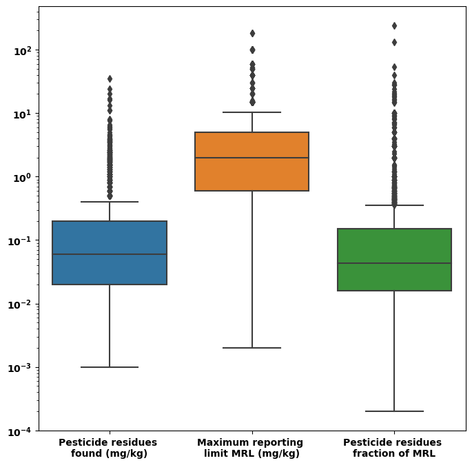
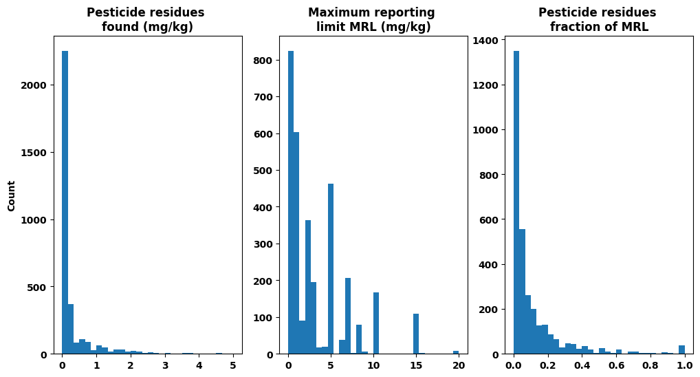
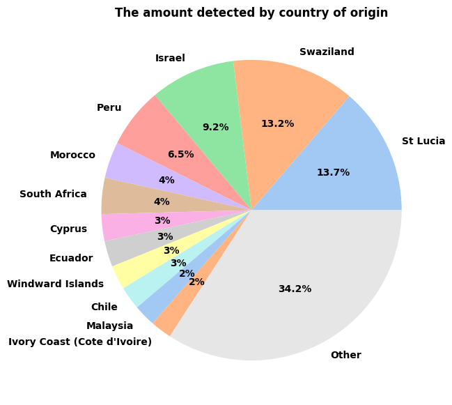
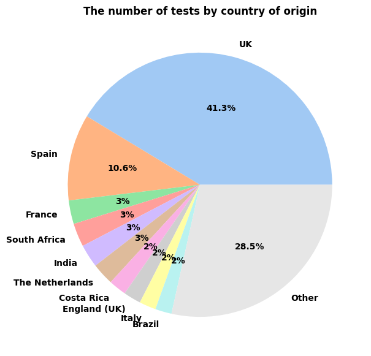
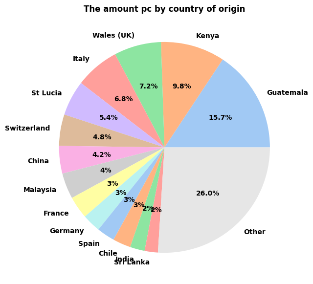
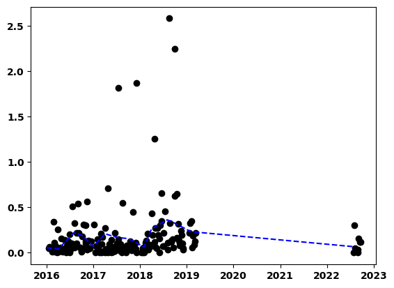

Pesticide: Summary of the data
Contents
Pesticide: Summary of the data#
Summary plots and tables
Imports#
import pandas as pd
from pandasql import sqldf
import numpy as np
import seaborn as sns
import matplotlib.pyplot as plt
import os
from pathlib import Path
import sys
module_path = Path( os.getcwd() )
module_path = module_path.parent.__str__() + '\\Pesticide'
sys.path.insert(0, module_path)
module_path
'C:\\Users\\44781\\Documents\\GitHub\\Pesticide'
from src.data_loading.loads_from_url import *
from src.data_cleaning.modify_dfs import *
from src.data_visualisation.plot_funcs import *
cwd = module_path
folder_path = os.path.join(cwd,'data')
file_path = []
for x in os.listdir(folder_path):
file_path.append(os.path.join(folder_path,x) )
# load data and clean
df = import_ods(file_path[2])
df2 = modify_df(df)
# needs to be added to modify
df2['amount_pc']=df2['amount_detected']/df2['mrl']
df2.loc[df2['amount_pc'].isna(),['amount_pc']]=0
df2.head()
| sample_id | date_of_sampling | description | country_of_origin | retail_outlet | address | brand_name | packer_/_manufacturer | pesticide_residues_found_in_mg/kg_(mrl) | product | address_postcode | packer__postcode | chem_name | amount_detected | mrl | amount_pc | |
|---|---|---|---|---|---|---|---|---|---|---|---|---|---|---|---|---|
| 0 | 2464/2018 | 2018-06-18 | The best natural beef dripping | UK | Morrisons | Basingstoke Road Reading RG2 0HB | Morrisons | Morrisons Gain Lane Bradford BD3 7DL | n/a | Animal_fats | RG2 0HB | BD3 7DL | 0 | 0.0 | 0.0 | 0.0 |
| 1 | 1700/2018 | 2018-04-30 | Finest beef dripping | UK | Sainsburys | Tritton Road Lincoln LN6 7QN | Britannia | Princes LTD Liverpool L3 1NX | n/a | Animal_fats | LN6 7QN | L3 1NX | 0 | 0.0 | 0.0 | 0.0 |
| 2 | 3439/2018 | 2018-06-18 | Finest beef dripping | UK | Sainsburys | Upton Bypass Wirral CH49 6QG | Brittania | Princes LTD Liverpool L3 1NX | n/a | Animal_fats | CH49 6QG | L3 1NX | 0 | 0.0 | 0.0 | 0.0 |
| 3 | 4247/2018 | 2018-04-09 | Finest beef dripping | UK | Sainsburys | Sunderland North Riverside Road Sunderland SR5... | Britannia | Princes LTD Liverpool L3 1NX | n/a | Animal_fats | SR5 3TG | L3 1NX | 0 | 0.0 | 0.0 | 0.0 |
| 4 | 1771/2018 | 2018-04-09 | Finest beef dripping | UK | Tesco | Dukes Green Avenue Feltham TW14 0LH | Britannia | Princes LTD Liverpool L3 1NX | n/a | Animal_fats | TW14 0LH | L3 1NX | 0 | 0.0 | 0.0 | 0.0 |
df2.describe(include='all', datetime_is_numeric=True)
| sample_id | date_of_sampling | description | country_of_origin | retail_outlet | address | brand_name | packer_/_manufacturer | pesticide_residues_found_in_mg/kg_(mrl) | product | address_postcode | packer__postcode | chem_name | amount_detected | mrl | amount_pc | |
|---|---|---|---|---|---|---|---|---|---|---|---|---|---|---|---|---|
| count | 5285 | 5285 | 5285 | 5285 | 5285 | 5285 | 5285 | 5285 | 5285 | 5285 | 5285 | 5285.0 | 5285.0 | 5285.000000 | 5285.000000 | 5285.000000 |
| unique | 3285 | NaN | 1439 | 87 | 457 | 1350 | 434 | 1104 | 1719 | 40 | 550 | 332.0 | 143.0 | NaN | NaN | NaN |
| top | 2430/2018 | NaN | Conference Pears | UK | Tesco | Edinburgh Road, Perth PH2 8DX | None stated | Tesco Stores Ltd Welwyn Garden City AL7 1GA | n/a | Grapefruit | PE19 2HD | 0.0 | 0.0 | NaN | NaN | NaN |
| freq | 21 | NaN | 130 | 1653 | 653 | 68 | 1698 | 602 | 1716 | 390 | 97 | 2104.0 | 2032.0 | NaN | NaN | NaN |
| mean | NaN | 2018-07-05 00:43:52.052980224 | NaN | NaN | NaN | NaN | NaN | NaN | NaN | NaN | NaN | NaN | NaN | 0.214598 | 2.644282 | 0.302054 |
| min | NaN | 2018-01-09 00:00:00 | NaN | NaN | NaN | NaN | NaN | NaN | NaN | NaN | NaN | NaN | NaN | 0.000000 | 0.000000 | 0.000000 |
| 25% | NaN | 2018-04-23 00:00:00 | NaN | NaN | NaN | NaN | NaN | NaN | NaN | NaN | NaN | NaN | NaN | 0.000000 | 0.000000 | 0.000000 |
| 50% | NaN | 2018-07-03 00:00:00 | NaN | NaN | NaN | NaN | NaN | NaN | NaN | NaN | NaN | NaN | NaN | 0.020000 | 0.500000 | 0.010000 |
| 75% | NaN | 2018-09-30 00:00:00 | NaN | NaN | NaN | NaN | NaN | NaN | NaN | NaN | NaN | NaN | NaN | 0.090000 | 3.000000 | 0.066667 |
| max | NaN | 2018-12-04 00:00:00 | NaN | NaN | NaN | NaN | NaN | NaN | NaN | NaN | NaN | NaN | NaN | 35.000000 | 182.000000 | 240.000000 |
| std | NaN | NaN | NaN | NaN | NaN | NaN | NaN | NaN | NaN | NaN | NaN | NaN | NaN | 0.943315 | 7.341612 | 4.113542 |
Modify functions#
def groupby_id_and_q(df2: pd.DataFrame,
col_groupby: str = 'country_of_origin') -> pd.DataFrame:
"""
Groups a Pandas DataFrame based on the sample_id and country_of_origin
the new dataframe has a new column number_of_tests
- this is the number of unique sample_ids
the other 2 numerical columns are means of previous values
Args:
df2 (pd.DataFrame): DataFrame of Pesticide data after 1st clean
col_groupby (str): Column to do 1st groupby
Raises:
ValueError: ??
Returns:
df2_grouped (pd.DataFrame): Pandas DataFrame grouped by id and country- note the mean is taken twice
1. When grouping by id
2. When grouping by col_groupby
the new dataframe has a new column number_of_tests
- this is the number of unique sample_ids
in addition to the previous numeric columns
df2_grouped_sample (pd.DataFrame): Pandas DataFrame grouped by id only
"""
# group by id
df2_grouped_sample = df2.groupby(['sample_id','date_of_sampling', col_groupby],as_index=False).mean(numeric_only =True).sort_values('amount_detected', ascending=False)
# group by col_groupby-> mean
df2_grouped = df2_grouped_sample.groupby(col_groupby,as_index=False).mean(numeric_only =True)
# group by col_groupby-> count
df2_grouped_b = df2_grouped_sample.groupby(col_groupby, as_index=False).count().iloc[:,0:2]
# merge the 2 new dfs and rename count column
df2_grouped= df2_grouped.merge(df2_grouped_b, left_on=col_groupby, right_on=col_groupby)
df2_grouped.rename(columns ={'sample_id':'number_of_tests'},inplace=True)
# sort dataframe by counts
df2_grouped= df2_grouped.sort_values('number_of_tests', ascending=False)
# reset index
df2_grouped.reset_index(inplace=True, drop=True)
df2_grouped_sample.reset_index(inplace=True, drop=True)
return df2_grouped, df2_grouped_sample
df2_grouped, df2_grouped_sample = groupby_id_and_q(df2)
df2_grouped
| country_of_origin | amount_detected | mrl | amount_pc | number_of_tests | |
|---|---|---|---|---|---|
| 0 | UK | 0.119058 | 1.136265 | 0.256603 | 1358 |
| 1 | Spain | 0.077826 | 2.294524 | 0.380934 | 347 |
| 2 | France | 0.108354 | 1.071482 | 0.474971 | 95 |
| 3 | South Africa | 0.424217 | 3.561646 | 0.110971 | 94 |
| 4 | India | 0.151770 | 0.982138 | 0.310877 | 93 |
| ... | ... | ... | ... | ... | ... |
| 82 | Pacific Ocean | 0.000000 | 0.000000 | 0.000000 | 1 |
| 83 | Icelandic Waters | 0.000000 | 0.000000 | 0.000000 | 1 |
| 84 | Ivory Coast (Cote d'Ivoire) | 0.250000 | 1.300000 | 0.241667 | 1 |
| 85 | Jersey (UK) | 0.000000 | 0.000000 | 0.000000 | 1 |
| 86 | Alaska | 0.000000 | 0.000000 | 0.000000 | 1 |
87 rows × 5 columns
Plot functions#
column_names_dict={'amount_detected': 'Pesticide residues \nfound (mg/kg)' ,
'mrl': 'Maximum reporting \nlimit MRL (mg/kg)',
'amount_pc' : 'Pesticide residues \nfraction of MRL'}
def range_plots(df2: pd.DataFrame,
plot_type: str ='boxplot', column_to_plot: str = 'amount_detected',
cols_numeric: list=[], max_bin: list=[], bin_no: int = 30,
column_names_dict: dict =column_names_dict ) -> plt.figure:
"""
Produces plots to show ranges in data
N.B. zeros are removed
https://seaborn.pydata.org/generated/seaborn.boxplot.html#seaborn.boxplot
change for violinplot
Args:
df2 (pd.DataFrame): Pandas DataFrame. Pesticide data after grouping
plot_type (str): string of type of plot to do 'boxplot' or 'hist'
column_to_plot (str): which column to plot
cols_numeric (list[str]): list of column strings to plot (no input finds numeric columns)
max_bin (list[float]): list of floats (or ints) to gave max range for histogram (min = 0).
bin_no (int): number of bins
column_names_dict (dict): dict of what to change column names to and from
Raises:
ValueError: ??
Returns:
pyplot figures object of a boxplot or histogram
"""
# if no input of cols_numeric finds from dtype=int or float
if not cols_numeric:
cols_numeric = [column for column in df2 if df2[column].dtype=='float' or df2[column].dtype=='int' ]
# get just the cols_numeric columns
numeric_df = df2.loc[:,cols_numeric].copy()
numeric_df = numeric_df.loc[ numeric_df[column_to_plot]!=0]
# rename columns
numeric_df = numeric_df.rename(columns = column_names_dict)
# different plot types
if plot_type=='boxplot':
fig = plt.figure(figsize=(8,8))
sns.boxplot( data = numeric_df )
plt.yscale('log')
elif plot_type=='hist':
n_cols = 3
n_rows = len(numeric_df.columns) // n_cols
fig, ax = plt.subplots(nrows= n_rows, ncols= n_cols, sharex= False,
figsize= (12, 6))
if not max_bin:
max_bin = [5, 20, 1]
for i,cols in enumerate(numeric_df):
data_col = numeric_df[cols]
counts, bins = np.histogram(data_col,
range = [0, max_bin[i]], bins= bin_no)
ax[i].hist(bins[:-1], bins, weights=counts)
# ax[i].set_yscale('log')
ax[i].set_title(cols)
if i==0:
ax[i].set_ylabel('Count')
return fig
range_plots(df2);
range_plots(df2,plot_type='hist');


def pie_plot(df_grouped_temp: pd.DataFrame,
col_groupby : str = 'country_of_origin', col_plot: str ='number_of_tests',
NUM_LABELS : int = 15, MIN_PCT : float = 2.) -> plt.figure:
"""
Produces a pie plot from grouped data see groupby_id_country_chemical which does the grouping
Args:
df_grouped_temp (pd.DataFrame): Pandas DataFrame. Pesticide data after grouping
col_groupby (str): which column has the names of the pie slices
col_plot (str): which column has the data
NUM_LABELS (int): max number of labels shown on the plot
MIN_PCT (float): min % to display text has to be more than
Raises:
ValueError: ??
Returns:
pyplot figures object of a pie chart
"""
maxed_out = False
# what multiple of MIN_PCT have no decimal point
go_to_1dp = 2.
df_grouped_temp = df_grouped_temp[[col_groupby, col_plot]].copy()
df_grouped_temp = df_grouped_temp.sort_values(col_plot, ascending=False)
if len(df_grouped_temp) > NUM_LABELS:
df_grouped_temp[col_plot] = 100*df_grouped_temp[col_plot]/sum(df_grouped_temp[col_plot])
df_grouped_temp = df_grouped_temp.loc[df_grouped_temp[col_plot]>MIN_PCT]
new_row = pd.Series({col_groupby: 'Other',
col_plot: 100-sum( df_grouped_temp[col_plot] )})
df_grouped_temp = pd.concat([df_grouped_temp, new_row.to_frame().T], ignore_index=True)
maxed_out = True
labels=df_grouped_temp[col_groupby].copy()
colors = sns.color_palette('pastel')
len_colors = len(colors)
# create colors of length of labels
for i in range(0, len(labels)//len_colors + 1):
colors= colors + colors
colors = colors[:len(labels)]
# if there is an 'other' make the other this color
if maxed_out:
colors[-1]=(.9,.9,.9)
fig=plt.figure(figsize=(7,7))
def func(pct, allvals):
absolute = int(np.round(pct/100.*np.sum(allvals)))
if pct> MIN_PCT * go_to_1dp:
text_out = "{:.1f}%".format(pct)
else:
text_out = "{:.0f}%".format(pct)
return text_out
wedges, texts, autotexts =plt.pie(df_grouped_temp[col_plot],
colors = colors, labels=labels,
autopct=lambda pct: func(pct, df_grouped_temp[col_plot]));
col_plot = col_plot.replace('_',' ')
col_groupby = col_groupby.replace('_',' ')
plt.title(f'The {col_plot} by {col_groupby}')
return fig
pie_plot(df2_grouped,col_groupby='country_of_origin' , col_plot='amount_detected');
pie_plot(df2_grouped,col_groupby='country_of_origin' , col_plot='number_of_tests');
pie_plot(df2_grouped,col_groupby='country_of_origin' , col_plot='amount_pc');



Changes with time#
# Return a named tuple object with three components: year, week and weekday
# https://docs.python.org/3/library/datetime.html#datetime.date.isocalendar
def get_week(x):
return x.isocalendar()[1]
xx=df2_grouped_sample.copy()
xx['week'] = df2_grouped_sample['date_of_sampling'].apply(get_week)
xx['month'] = pd.DatetimeIndex(xx['date_of_sampling']).month
xx2 = xx.groupby(['month','week'], as_index=False).sum()
plt.plot(xx2['week'], xx2['amount_pc'],'ok')
# xx2
xx3 = xx.groupby('month', as_index=False).sum()
# xx3['week'] =
xx3 = xx2.loc[:,['month','week','amount_pc']].groupby('month', as_index=False).mean()
plt.plot(xx3['week'], xx3['amount_pc'],'-o')
xx3
# xx3
C:\Users\44781\AppData\Local\Temp\ipykernel_17720\2100727419.py:11: FutureWarning: The default value of numeric_only in DataFrameGroupBy.sum is deprecated. In a future version, numeric_only will default to False. Either specify numeric_only or select only columns which should be valid for the function.
xx2 = xx.groupby(['month','week'], as_index=False).sum()
C:\Users\44781\AppData\Local\Temp\ipykernel_17720\2100727419.py:18: FutureWarning: The default value of numeric_only in DataFrameGroupBy.sum is deprecated. In a future version, numeric_only will default to False. Either specify numeric_only or select only columns which should be valid for the function.
xx3 = xx.groupby('month', as_index=False).sum()
| month | week | amount_pc | |
|---|---|---|---|
| 0 | 1 | 3.500000 | 2.086306 |
| 1 | 2 | 7.000000 | 7.833231 |
| 2 | 3 | 10.500000 | 2.774463 |
| 3 | 4 | 16.000000 | 19.927724 |
| 4 | 5 | 19.666667 | 10.779852 |
| 5 | 6 | 24.000000 | 23.025182 |
| 6 | 7 | 27.333333 | 24.129023 |
| 7 | 8 | 32.500000 | 31.458573 |
| 8 | 9 | 37.000000 | 31.762303 |
| 9 | 10 | 42.000000 | 23.999908 |
| 10 | 11 | 46.000000 | 15.223698 |
| 11 | 12 | 48.500000 | 0.871350 |
# xx2 = xx.groupby('month', as_index=False).mean()
# plt.plot(xx2['week'], xx2['amount_pc'],'-o')
# xx2
Other Stuff#
Didn’t make the grade ideas
labels=df2_grouped['country_of_origin']
colors = sns.color_palette('pastel')[0:len(labels)]
fig=plt.figure(figsize=(7,7))
def func(pct, allvals):
absolute = int(np.round(pct/100.*np.sum(allvals)))
if pct>2.5:
text_out = "{:.1f}%".format(pct)
else:
text_out=''
return text_out
wedges, texts, autotexts =plt.pie(df2_grouped['number_of_tests'], colors = colors,
autopct=lambda pct: func(pct, df2_grouped['number_of_tests']));
# plt.legend(wedges[0:10], labels[0:10],
# title="Ingredients",
# loc="center left",
# bbox_to_anchor=(1, 0, 0.5, 1))
bbox_props = dict(boxstyle="square,pad=0.3", fc="w", ec="k", lw=0.72)
kw = dict(arrowprops=dict(arrowstyle="-"),
bbox=bbox_props, zorder=0, va="center")
for i, p in enumerate(wedges):
if i<10:
ang = (p.theta2 - p.theta1)/2. + p.theta1
y = np.sin(np.deg2rad(ang))
x = np.cos(np.deg2rad(ang))
horizontalalignment = {-1: "right", 1: "left"}[int(np.sign(x))]
connectionstyle = "angle,angleA=0,angleB={}".format(ang)
kw["arrowprops"].update({"connectionstyle": connectionstyle})
plt.annotate(labels[i], xy=(x, y), xytext=(1.35*np.sign(x), 1.4*y),
horizontalalignment=horizontalalignment, **kw)

def pie_plot_old(df_grouped_temp: pd.DataFrame,
col_groupby : str = 'country_of_origin', col_plot : str ='number_of_tests',
NUM_LABELS : int = 10, MIN_PCT : float = 2.5) -> plt.figure:
"""
Produces a pie plot from grouped data see groupby_id_country_chemical which does the grouping
Ideas:
- below a certain % values go to 'other'
Args:
df_grouped_temp (pd.DataFrame): Pandas DataFrame. Pesticide data after grouping
col_groupby (str): which column has the names of the pie slices
col_plot (str): which column has the data
NUM_LABELS (int): max number of labels shown on the plot
MIN_PCT (float): min % to display text has to be more than
Raises:
ValueError: ??
Returns:
pyplot figures object of a pie chart
"""
df_grouped_temp = df_grouped_temp.copy()
df_grouped_temp = df_grouped_temp.sort_values(col_plot, ascending=False)
labels=df_grouped_temp[col_groupby].copy()
if len(labels)>NUM_LABELS:
labels[NUM_LABELS:]=''
colors = sns.color_palette('pastel')[0:len(labels)]
fig=plt.figure(figsize=(7,7))
def func(pct, allvals):
absolute = int(np.round(pct/100.*np.sum(allvals)))
if pct> MIN_PCT:
text_out = "{:.1f}%".format(pct)
else:
text_out=''
return text_out
wedges, texts, autotexts =plt.pie(df_grouped_temp[col_plot],
colors = colors, labels=labels,
autopct=lambda pct: func(pct, df_grouped_temp[col_plot]));
col_plot = col_plot.replace('_',' ')
col_groupby = col_groupby.replace('_',' ')
plt.title(f'The {col_plot} by {col_groupby}')
return fig
pie_plot_old(df2_grouped,col_groupby='country_of_origin' , col_plot='amount_detected');
C:\Users\44781\AppData\Local\Temp\ipykernel_17720\11647735.py:33: FutureWarning: The behavior of `series[i:j]` with an integer-dtype index is deprecated. In a future version, this will be treated as *label-based* indexing, consistent with e.g. `series[i]` lookups. To retain the old behavior, use `series.iloc[i:j]`. To get the future behavior, use `series.loc[i:j]`.
labels[NUM_LABELS:]=''